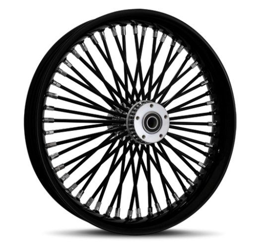

How it works - Open Cluster Management and ACM
Describes how Open Cluster Management (OCM) works and how OpenShift’s MultiCluster Engine (MCE) and Advanced Cluster Management (ACM) build on it to distribute work as Kubernetes resources across a fleet of clusters.

When managing a fleet of Kubernetes clusters it eventually becomes desirable to manage them as a unit and apply configuration and packages once to all and/or subsets of clusters. Activities that may be orchestrated across a fleet of clusters include:
- Work scheduling: deploy and monitor workloads and resources
- Policy enforcement: apply and monitor platform and runtime policies
- Access management: apply consistent authentication and authorization rules
- Command and control: inventory and observe all resources
- Cluster lifecycle: provision, modify and manage clusters
Commonly, a hub-and-spoke topology is implemented to provide this fleet management. Work, policy, identity and other configuration are defined in the hub cluster and automatically distributed to selected spokes.
Open Cluster Management (OCM)
Open Cluster Management (OCM) is a framework for creating such a hub-and-spoke topology and distributing work. The hub cluster runs ClusterManager to register and monitor spoke clusters. Each spoke cluster runs an agent named Klusterlet which registers with cluster-manager and pulls ManifestWork resources from a namespace dedicated to it in the hub.
Note, a hub-and-spoke topology can be implemented with controllers in the hub actively applying resources to spoke clusters via their API servers, also known as a “push” model; or with controllers in the spoke clusters pulling work to themselves and applying it from within the spoke cluster, also known as a “pull” model. The pull model generally scales better by distributing some load to each spoke. It is also more secure since the push model requires storing credentials for each spoke in the hub and opening inbound ports to spoke services. OCM emphasizes the pull model.
For inspection:
Note: Install
clusteradmas described here.
- On the hub, explore the ClusterManager resource:
oc get clustermanagers cluster-managerandclusteradm get hub-info. - On a spoke, explore the Klusterlet resource:
oc get klusterlet klusterletandclusteradm get klusterlet-info - On the hub, review pods running ClusterManager:
oc get pods -l app=cluster-manager -n multicluster-engine - On a spoke, review pods running Klusterlet and its work agent in namespace ‘open-cluster-management-agent’:
oc get pods -n open-cluster-management-agent
ManifestWork - A Work API
To review, the flow at the core of OCM is: Kubernetes resources are wrapped in a ManifestWork resource and the ManifestWork is placed in a namespace dedicated to a spoke cluster. The klusterlet in the spoke cluster opens a persistent connection to the hub to retrieve this ManifestWork and register it for itself as AppliedManifestWork.
ManifestWork is an implementation of SIG-Multicluster’s Work API. It is similar to a “GitOps” workflow - declare the resource in the right way and it is reconciled in the spoke cluster automatically.
And indeed, one way of using OCM is to craft ManifestWorks and place them in selected namespaces as described here. In fact, ManifestWorkReplicaSet is a feature that makes such distribution easier.
Some commands for inspecting ManifestWorks:
- On the hub, view all ManifestWorks published for a given spoke cluster:
clusteradm get works --cluster ${spoke}oroc get manifestworks -n ${spoke} - On a spoke, view works that have been applied:
oc get appliedmanifestworks - On a spoke, view logs showing the klusterlet pulling work with
oc logs -n open-cluster-management-agent -l app=klusterlet-agent.
OCM AddOns
While it’s possible to work with ManifestWork directly, AddOns are a key feature of OCM that abstract ManifestWorks into higher-level CRDs managed by special controllers named “addon managers”. These controllers are installed via independent Helm charts (or in OpenShift using the MCE and MCH CRs described below) and are registered and advertised by applying a ClusterManagementAddOn resource.
AddOn managers are responsible for managing several parts of a solution. They deploy hub-side components like proxy ingress servers and GitOps controllers. They deploy spoke-side components (called “addon agents”) like proxy clients and search indexers. And they watch for custom CRDs to dynamically reconcile into more ManifestWorks to be put to spoke clusters.
AddOns are activated for spokes by applying a ManagedClusterAddOn resource in their designated hub namespace. This triggers the controller to deploy an initial ManifestWork for the addon agent into the cluster’s designated namespace, which is then retrieved by the spoke’s klusterlet agent.
AddOn managers in the hub cluster typically run as deployments in multicluster-engine and open-cluster-management namespaces. AddOn agents in spoke clusters typically run as deployments in the open-cluster-management-agent-addon namespace.
For inspection:
- On the hub, list available AddOns with
clusteradm get addon --output tableoroc get clustermanagementaddons - On the hub, list AddOns installed to spokes with
oc get managedclusteraddons -A - On the hub, list ManifestWorks to be applied to spokes with
oc get manifestwork -A
MultiCluster Engine (MCE) and Advanced Cluster Management (ACM)
In OpenShift, OCM is installed by the MultiClusterEngine (MCE) operator and custom resource as implemented in stolostron/backplane-operator. MCE installs OCM’s ClusterManager, several OCM AddOns used in cluster lifecycle, and cluster-lifecycle-related operators such as Hive, cluster-api-installer, and HyperShift - find the full list here.
MultiClusterEngine is often installed as a component of Advanced Cluster Management, which provides many more OCM addons. ACM is installed by the MultiClusterHub (MCH) operator and custom resource as implemented in stolostron/multiclusterhub-operator. It includes all of MCE plus AddOns for workload scheduling with ArgoCD, policy application with its own framework, multicluster observability with spoke-side collectors, cross-cluster resource indexing and search, cross-cluster networking with Submariner, and hub disaster recovery with Velero/OADP. The full list is here.
The simplest way to manage the components installed by MCE and ACM is to edit the MultiClusterEngine and MultiClusterHub resources respectively using oc edit multiclusterengine multiclusterengine and oc edit multiclusterhub multiclusterhub.
AddOns in ACM
OCM AddOns provide ACM’s functionality. The following AddOns are available in a basic ACM cluster:
| Name | Description |
|---|---|
| application-manager | manage applications using channels and subscriptions (deprecated) |
| cert-policy-controller | apply CertificatePolicy resources |
| cluster-proxy | deploy proxy for hub-to-spoke connections |
| config-policy-controller | apply ConfigurationPolicy resources |
| gitops-addon | apply ArgoCD ApplicationSets via pull model |
| governance-policy-framework | apply typed manifests to managed clusters |
| governance-standalone-hub-templating | implement hub-side policy templating |
| hypershift-addon | integrate OCM with hosted control plane clusters |
| managed-serviceaccount | share service account tokens from managed clusters to hub |
| search-collector | gather resources from managed cluster for fast search from hub |
| submariner | connect managed clusters into a common network |
| volsync | backup persistent volumes between clusters |
| work-manager | execute tasks on managed clusters |
The Governance Policy Framework is an example of several AddOns that together publish controllers in both hub and spoke clusters and handle custom CRDs like CertificatePolicy, ConfigurationPolicy and OperatorPolicy. It is installed by default with ACM and is described further here.
Cluster Proxy is another typical AddOn described here. It deploys and configures a hub-side proxy server and spoke-side proxy clients using Konnectivity and publishes and watches a ManagedProxyConfiguration CRD to configure these components.
Conclusion
OCM is a useful framework for distributing work across a fleet. It is pull-oriented for scalability and security, standards-compliant for compatibility, and extensible for flexibility and ease of use. It is OpenShift’s framework of choice for distributing work across a fleet of clusters.